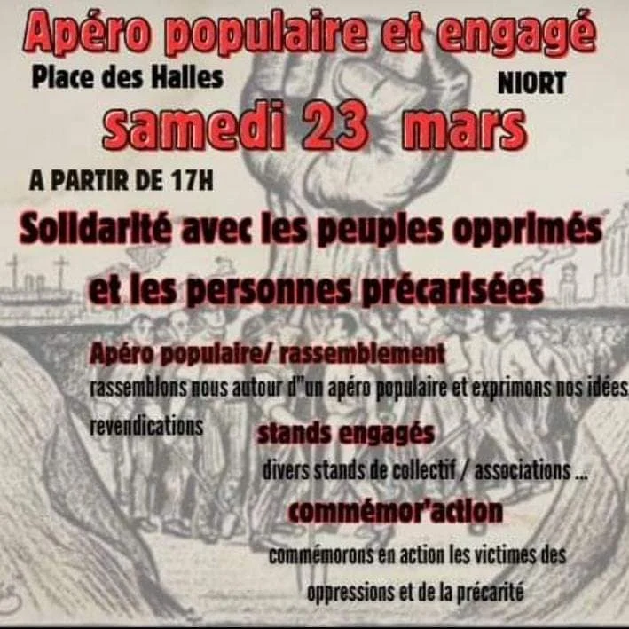
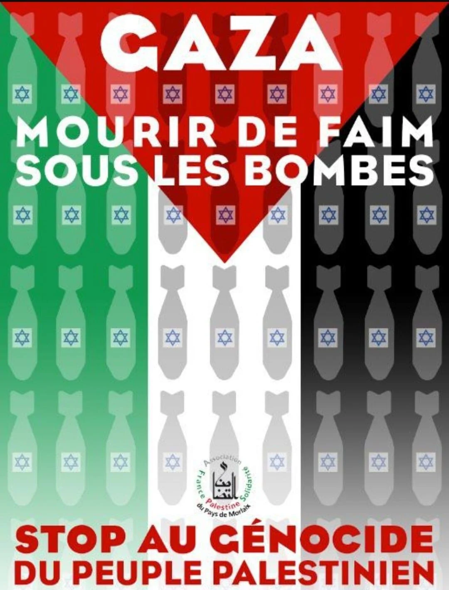

Appel relayé
À Niort, le Collectif Palestine 79 appelle à se rassembler le 23 mars
Date indiquée par Facebook · 22 mars 2024
Repères éditoriaux
Le Collectif Palestine 79 appelait à se retrouver à 17 h 30 sur le parvis des Halles afin d’exiger un cessez-le-feu définitif à Gaza.
Texte conservé avec la publication
Rassemblement samedi 23 mars à 17h30 parvis des Halles à Niort pour exiger un cessez-le-feu immédiat et définitif à #Gaza
#GazaGenocide
#FreePalestine


Sources
Archive rouge · export Facebook · AR-0002-FB-01438
À lire aussi · À Niort, le rassemblement du 25 octobre pour la paix en vidéo · Le lien d’origine